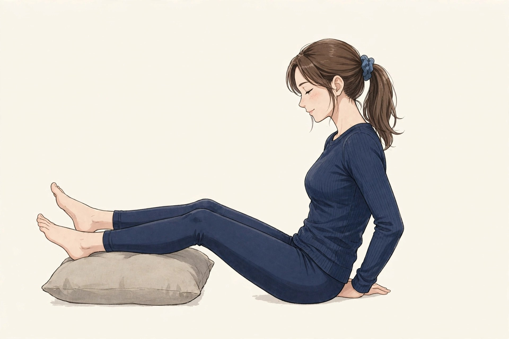

夕方に脚が重くなる理由と、巡りの仕組みを解説します
むくみは、血管の外に水分がにじみ出て、戻りきらずにたまった状態です。戻す力の中心は、心臓ではなく「筋肉のポンプ」と「リンパの流れ」です。
「朝は軽いのに夕方になると靴がきつい」「顔がむくんで目が重い」。むくみは多くの女性が日常的に感じる変化です。このページでは、むくみが起こる仕組みと、血行・リンパの役割、日常で巡りを助けるポイントを解説します。
血液は心臓から動脈を通って全身へ送られ、毛細血管で組織に酸素と栄養を渡します。その際、血液中の水分の一部は血管の外へにじみ出ます。通常、この水分は静脈とリンパ管に回収されて心臓へ戻りますが、回収が追いつかないと、余った水分が組織にたまります。これがむくみです。
立ったまま・座ったままの姿勢が続くと、重力で脚に水分が集まりやすくなります。塩分の多い食事、睡眠不足、冷え、月経前のホルモンの変化も、水分をため込みやすくする背景になります。
動脈には心臓のポンプがありますが、静脈とリンパ管には専用のポンプがありません。代わりに働くのが、筋肉が縮んだりゆるんだりする動き（筋ポンプ）です。歩くたびにふくらはぎの筋肉が動き、静脈とリンパを押し上げます。「ふくらはぎは第二の心臓」と呼ばれるのはこのためです。
つまり、むくみの大きな要因は「動かなさ」です。デスクワークで何時間も座り続ける生活は、ポンプが止まったまま水分だけが下へ集まる状態を作ります。
むくみを感じたときの基本は、たまった水分の戻り道を助けることです。クッションなどに脚をのせて心臓より少し高く保つと、重力に逆らわずに水分が戻りやすくなります（図1）。足首をゆっくり回したり、つま先を手前・奥へ倒したりする動きを添えると、ふくらはぎのポンプも働きます。

図1：脚をクッションにのせて休む姿勢。水分の戻りを助けます。入浴後のリラックスタイムに取り入れやすいケアです。
当サロンのオイルマッサージでは、末端から体の中心へ向けて滑らせる手技で、巡りを助けることを目的にしています。施術後の脚の軽さは、この戻りの流れが進むことで感じられる変化の一つです。
片脚だけが強くむくむ、むくみと一緒に痛みや赤みがある、息苦しさを伴うといった場合は、美容ケアの範囲を超えるサインのことがあります。その際は医療機関での確認をおすすめします。
リンパ管は、静脈で回収しきれなかった水分と老廃物を集める、もう一つの戻り道です。流れは一方向で、体の表面近くを浅く流れるものと、深いところを流れるものがあります。途中の関節の内側（膝の裏、脚の付け根、脇の下、首など）にはリンパ節があり、関門のような役割をしています。
リンパの流れはとてもゆっくりで、動かす力は筋ポンプと呼吸、そして外からのやさしい圧です。強い圧で押し流すイメージを持たれがちですが、浅いリンパは軽い圧で十分に流れが進みます。オイルマッサージの滑らせる手技は、この浅い流れに沿った働きかけです。
当てはまる項目が多いほど、回収する力に対して、たまる条件が勝っている状態です。一つずつでも条件を減らすと、夕方の脚の重さは変わってきます。当サロンの施術は、その日のたまりを流す時間であると同時に、ご自宅で続けやすいケアを確認する機会にもなります。
オイルを使う理由の一つは、皮膚への摩擦を減らして、浅いリンパの流れに沿った滑走を続けるためです。末端から中心へ、関節の内側のリンパ節へ向けて流す方向にも意味があります。施術後に体が温かく感じるのは、筋肉の緊張がほどけて血行が進むためでもあります。冷えとむくみが重なっている方では、温めることと流すことを組み合わせる進め方が合っています。
朝の顔のむくみは、横になって寝ている間に起こります。立っている間は重力で下へ集まる水分が、横になると全身に均等に広がり、顔やまぶたのような柔らかい組織に集まりやすくなるためです。起き上がって動き始めると、重力と筋ポンプの働きで徐々に引いていきます。
寝る前の塩分や水分の摂りすぎ、うつ伏せ寝、枕の高さが合わないことも、朝のむくみを強くする背景になります。朝の洗顔で冷たい水と温かいタオルを交互に当てる、耳のまわりや首をやさしく流すといった小さなケアでも、引く速さは変わってきます。
冷えとむくみは、互いを強め合う関係にあります。体が冷えると血管が収縮して血行が落ち、水分の回収が進みにくくなります。むくんで組織に水分がたまると、その水分が体を冷やし、さらに巡りが悪くなる。冷え性の方がむくみを感じやすいのは、この循環のためです。
対策も共通します。体を温めること（入浴、温かい食事、冷やさない服装）と、動かして戻すこと（歩行、ふくらはぎの運動）です。当サロンのケアでも、冷えを感じる方には温める工程を厚くし、オイルの滑走で巡りを助ける進め方を選んでいます。
日常的に起こるむくみの多くは、姿勢や生活習慣による一時的なものです。指で押すと跡が残り、時間とともに引いていくのが特徴です。一方で、病気が背景にあるむくみもあります。片脚だけが急に腫れる、痛みや熱を伴う、息切れや胸の苦しさがある、尿の量が大きく変わった、といった場合は、美容ケアの対象ではなく、医療機関での確認が必要です。
また、むくみと間違えやすいものに、脂肪や筋肉の張りがあります。1日の中で太さが変わるならむくみ、変わらないなら別の要因を考える、というのが大まかな見分け方です。施術前の確認では、この違いも含めて状態をうかがいます。
むくみは季節でも変わります。夏は冷房で体が冷え、血管の働きが落ちてむくみやすくなります。暑さで水分と塩分の摂り方が偏ることも背景です。冬は寒さで血行が落ち、運動量も減るため、やはりむくみやすい季節です。一年を通してむくみと付き合うには、季節ごとの条件を知り、温め方と動かし方を調整することが役立ちます。
施術で巡りを進めた後は、その流れを保つ過ごし方が大切です。当日は水分をこまめに摂り、湯船で軽く温まり、脚を高くして休む時間を作ると、軽さが続きやすくなります。逆に、施術直後の激しい運動や、長時間の同じ姿勢は、せっかく進んだ巡りを止めてしまいます。施術の効果を日常へつなぐために、後の過ごし方まで含めてケアと捉えています。
当てはまる項目が多いほど、日常の水分の巡りに滞りがあるサインです。体重の日内変動の多くは水分によるもので、脂肪が1日で増減しているわけではありません。数字に一喜一憂するより、巡りの条件を整えることが先です。
夕方の脚のむくみは、靴選びにも影響します。朝のサイズで選んだ靴が夕方にきつくなるのは、むくみの日内変動のためです。靴を試すなら夕方の時間帯が向いています。また、ヒールの高い靴はふくらはぎのポンプが働きにくい姿勢を作り、むくみを強める背景になります。履く日と歩く距離の組み合わせを考えることも、むくみ対策の一つです。
Q. むくみと脂肪はどう違いますか？
A. むくみは水分のたまりで、1日の中でも変化します。脂肪は時間をかけて蓄積するもので、日内変動はしません。夕方だけ太く感じる場合は、むくみの影響が大きいと考えられます。
Q. リンパマッサージは強く流す方がいいですか？
A. リンパの流れは皮膚の浅いところにあり、強い圧は必要ありません。やさしい圧で中心へ向けて滑らせる方が、流れに沿った働きかけになります。
Q. むくみは水分を控えれば取れますか？
A. 水分不足はかえって体が水分をため込む方向に働くことがあります。極端に控えるのではなく、塩分とのバランスと、動いて戻すことを意識してください。
Q. 朝の顔のむくみはなぜ起こりますか？
A. 横になっている間は重力の影響が全身に均等になり、顔まわりに水分が集まりやすくなります。起きて動き出すと徐々に引いていくのが通常の変化です。
解説と施術は、施術歴30年・鍼灸師の資格を持つ平賀建人が担当します。登録販売者・アロマセラピスト・パーソナルトレーナーの知識も活かし、体の仕組みをできるだけ分かりやすくお伝えすることを心がけています。
この記事は専門解説シリーズの1本です。料金やご予約についてはトップページをご覧ください。